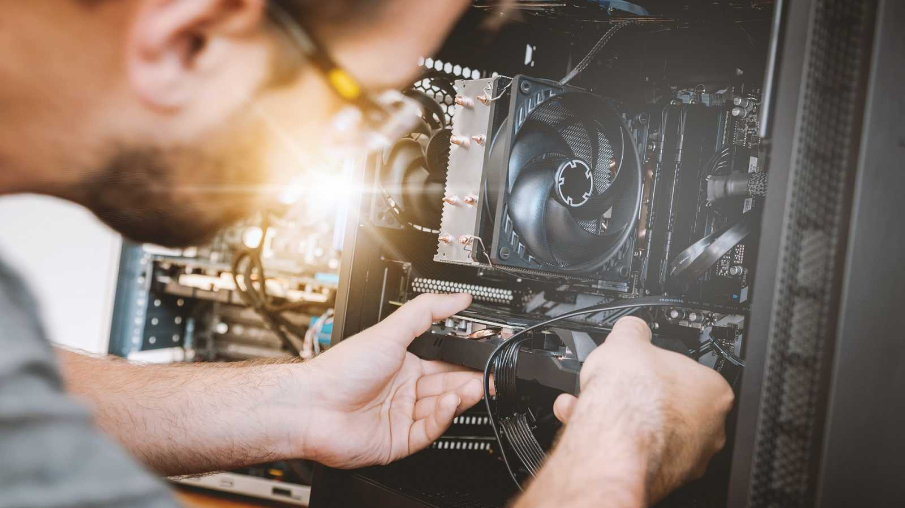
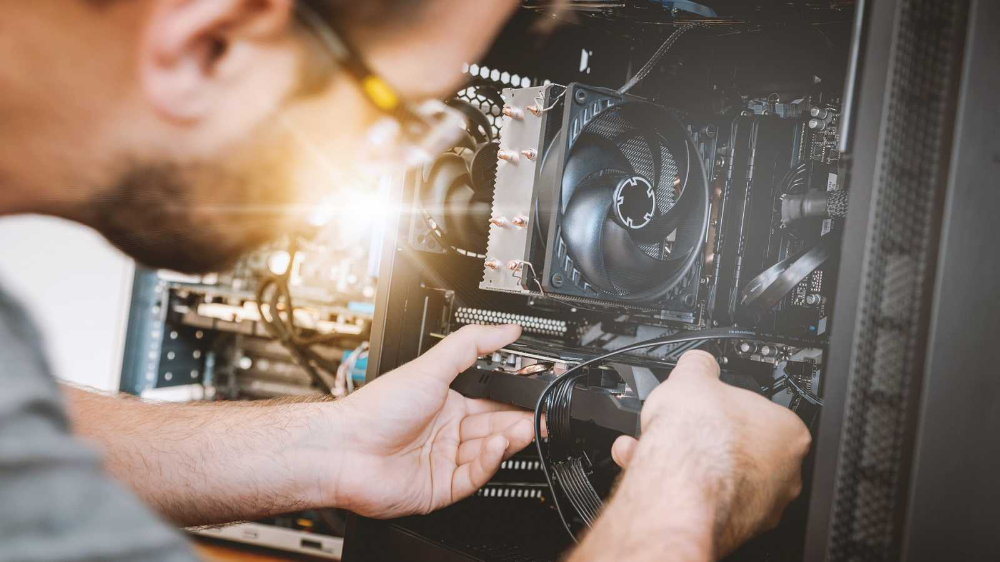

Hardware je fyzická část počítače nebo jiného elektronického zařízení, která je hmatatelná. Na rozdíl od softwaru, který zahrnuje programy a aplikace, je hardware to, co tvoří základní součásti zařízení. Základní komponenty hardwaru počítače zahrnují: Procesor (CPU - Central Processing Unit): Mozek počítače. Zpracovává instrukce a provádí výpočty. Paměť (RAM - Random Access Memory): Dočasná úložiště pro data, která počítač momentálně používá. Čím více RAM, tím více operací může probíhat najednou. Pevný disk (HDD/SSD): Úložiště dat, kam se ukládá operační systém, aplikace, soubory a další data. SSD (Solid State Drive) je modernější a rychlejší než klasický HDD (Hard Disk Drive). Grafická karta (GPU - Graphics Processing Unit): Specializovaná komponenta, která se stará o vykreslování grafiky, zvláště důležitá pro hry a aplikace náročné na grafiku. Základní deska (Motherboard): Spojuje všechny součásti dohromady a zajišťuje jejich komunikaci. Základní deska má zásadní vliv na kompatibilitu ostatních komponent. Napájecí zdroj (PSU - Power Supply Unit): Zajišťuje napájení všech komponent. Chlazení (ventilátory, chladiče, vodní chlazení): Odvádí teplo produkované během provozu jednotlivými komponenty, zejména procesorem a grafickou kartou. Periférie: Mezi ně patří zařízení jako monitor, klávesnice, myš, tiskárna, skener, a další externí přídavná zařízení. Hardware se neustále vyvíjí a zlepšuje, aby mohl zpracovávat stále složitější úkoly, což umožňuje vývoj softwaru a aplikací s vyššími nároky na výkon. Důležitý je také vztah mezi hardwarem a softwarem, protože efektivní spolupráce obou složek je nezbytná pro správné fungování zařízení.
Hardware
Tady naleznete asi nejlepší cenové pc-sestavy 
